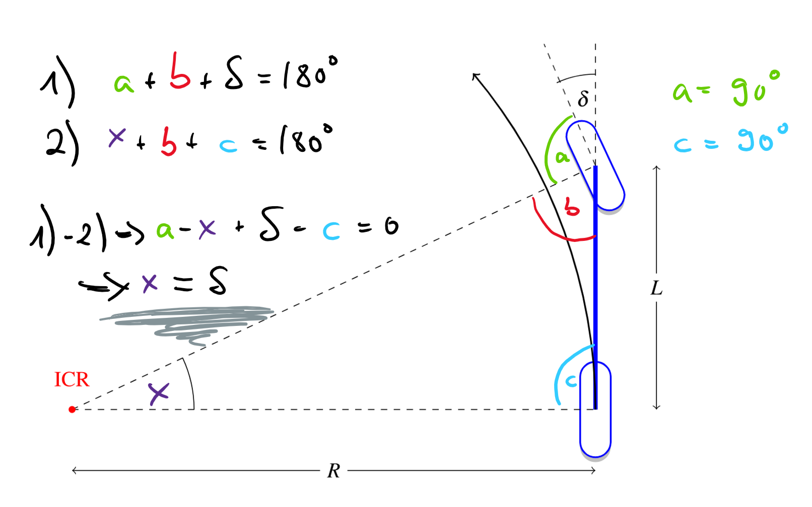

Kinematic Bicycle Model¶
The pure pursuit method for lateral vehicle control is based on a mathematical model of a vehicle known as the bicycle model. A prerequisite for understanding the bicycle model is the concept of the instantaneous center of rotation.
Instantaneous center of rotation (ICR)¶
Let us consider a rigid body performing a planar motion. An example would be a vehicle driving on a flat road. We pick a world coordinate system, for which the \(x-y\) plane coincides with the motion plane of the rigid body. Now, we pick one point \(\mathbf{r}_0\) within the rigid body as the reference point. We are free to pick any point we want. For our vehicle, we could e.g. use the center of the rear axle. If we pick another point \(\mathbf{r}\) within the rigid body (for our vehicle maybe the left front tire), then we can express the velocity of that point via
Note that a dot means time derivative: \(\frac{d}{dt}\mathbf{r}(t)=\dot{\mathbf{r}}(t)\) and that the angular velocity vector \(\Omega\) does not depend on the choice of \(\mathbf{r}_0\) (for a proof see Wikipedia).
Claim: For any given point in time, we can find a point \(\mathbf{r}\), for which \(\dot{\mathbf{r}}=0\). We call this point the instantaneous center of rotation \(\mathbf{r}_{ICR}\). Note that \(\mathbf{r}_{ICR}\) does not need to lie inside the rigid body.
Proof of the claim
We need to find \(\mathbf{r}\), for which \(\dot{\mathbf{r}}=0\). This means
Note that \(\mathbf{r}_0(t), \dot{\mathbf{r}_0}(t)\) and \(\mathbf{\Omega}(t)\) are given. We introduce the unknown variable \(\mathbf{X}(t)=\mathbf{r}-\mathbf{r}_0\). If we can find an \(\mathbf{X}(t)\), such that \(0=\dot{\mathbf{r}_0} + \mathbf{\Omega} \times \mathbf{X}\), then we can set \(\mathbf{r} = \mathbf{X} + \mathbf{r}_0\), and we are done. Since the motion is planar, the angular velocity is \(\mathbf{\Omega}(t)=\Omega(t) (0,0,1)^T\), and \(\dot{\mathbf{r}_0}=(V_x(t), V_y(t), 0)^T\). Writing \(\mathbf{X}=(x,y,z)\), our equation becomes
This equation can be easily solved for \(\mathbf{X}=(x,y,z)\) by setting \(x=-V_y/\Omega\) and \(y=V_x/\Omega\) and \(z=0\). This concludes the proof. Note that this proof will fail without the assumption of planar motion. There is no instantaneous center of rotation for a general three dimensional motion.
Corollary: For any given point in time, we can choose \(\mathbf{r}_0=\mathbf{r}_{ICR}\) as the reference point. Then, for any point in the rigid body
But since \(\dot{\mathbf{r}}_{ICR}=0\), we have
Hence, the motion of any point in the rigid body \(\mathbf{r}\) is just a pure rotation around the instantaneous center of rotation \(\mathbf{r}_{ICR}\).
Now let us visualize the ICR and see how it can be used in technical sketches.
{kind=link}
If we are given a rigid body (gray rectangle) and its ICR (red dot) as in Fig. 20, this suffices to draw the orientation of the velocity vector for all points in the rigid body. Due to the properties of the cross product, the velocity vector \(\dot{\mathbf{r}}\) (red arrow) is perpendicular to \((\mathbf{r}-\mathbf{r}_{ICR})\), i.e., the line connecting the ICR and the point (black line). Note that the velocity vectors could be pointing into the opposite direction and would still be perpendicular. We can only do the correct sketch in this regard if we know the sign of the z-component of \(\mathbf{\Omega}\). The length of the velocity vector is determined by the length of the black line \(|(\mathbf{r}-\mathbf{r}_{ICR})|\) and the magnitude of \(\mathbf{\Omega}\).
Fig. 21 shows that we can turn this argument around: If we know the velocity vector direction (red arrow) of a point (blue dot) in the rigid body, we can draw a dashed line through the point (blue dot), which is perpendicular to the velocity vector. The ICR needs to lie on this dashed line, otherwise \(\dot{\mathbf{r}}\) and \((\mathbf{r}-\mathbf{r}_{ICR})\) would not be perpendicular. If we know the velocity vector direction of at least two points, we can find the ICR as the intersection of the dashed lines.
{kind=link}
Ackermann steering geometry¶
Now that we learned about rigid bodies in general, let us study the rigid body of a four-wheeled car, which is steered by the front axle. Fig. 22 depicts such a vehicle and introduces the wheel steer angle \(\delta\).

Fig. 22 Definition of wheel steer angle for the left (\(\delta_l\)) and right front wheel (\(\delta_r\)). Steering via the rear wheels is uncommon and will not be considered here.¶
Note that the steering wheel angle is different from the wheel steer angle. The wheel steer angle is the angle of the wheels, while the steering wheel angle is the angle of the steering wheel (the object the driver holds in her hands). Typically
wheel_steer_angle = a*(steering_wheel_angle - b)
where a and b are car-specific constants, and b is the steering wheel offset, something that should ideally be zero.
Preferably, we want our wheels to just roll, but for dynamic maneuvers or on an slippery surface, they will also slip. Fig. 23 introduces the important concept of the (side) slip angle.
{kind=link}
Fig. 23 If the velocity direction of a wheel center (red arrow), does not coincide with the orientation of the wheel (gray dashed arrow), the tire is slipping to the side. The angle between the velocity (red) and the wheel orientation (gray dashed) is known as the side slip angle, or just slip angle. In general, it is different for each individual wheel.¶
For the kinematic four-wheel model the slip angles of all four tires are assumed to be zero. Let us think about what this means for the ICR. Since the slip angles are zero, the wheel orientations are equal to the wheel velocities. For each wheel we can mentally draw a dashed line perpendicular to the wheel orientation and hence wheel velocity like in Fig. 21. Since the motion is planar, there needs to be an ICR, and hence all these dashed lines need to intersect in that ICR.
We consider the rear wheels first. Both have the same orientation. So we only know that the ICR is on the line moving through both rear wheels.
Next, consider the front wheels. If we choose some wheel steer angles \((\delta_l, \delta_r)\), we have picked the wheel orientations. If we now draw dashed lines perpendicular to the wheel orientations like in Fig. 21, we obtain the ICR. We can then check if this ICR lies on the line moving through both rear tires as it needs to (by our considerations about the rear wheels). If it does, our choice of \((\delta_l, \delta_r)\) was good and we have constructed a so-called Ackermann steering geometry. Note that in general \(\delta_l \neq \delta_r\), which has important implications for practical steering systems.
Kinematic Bicycle model¶
For the bicycle model, the two front wheels as well as the two rear wheels are lumped into one wheel each.

The kinematic bicycle model is the bicycle model together with the assumption that all slip angles are zero. Using this assumption together with our knowledge about the ICR, we can derive practical formulas for the kinematic bicycle model using Fig. 24.

Fig. 24 Geometry of the bicycle model. The distance \(L\) between the wheels is called wheel base.¶
As we have learned in Fig. 21, we construct the ICR by drawing dashed lines perpendicular to the wheel velocities (which are equal to the wheel orientations due to our assumption of no slip). By the property of the ICR, we know that the rear wheel will move along the black circular arc in Fig. 24. Finally, you should convince yourself that the angle in the bottom left of Fig. 24 is equal to the wheel steer angle \(\delta\)
Not convinced?

From the triangle in Fig. 21 we find
Using \(v = \Omega_z R\), where \(v\) denotes the velocity magnitude, we can solve this for the steer angle
If we define \((x,y)\) as the position of the rear wheel in some global reference frame, and \(\theta\) as the angle of the bicycle’s forwards direction with respect to the x-axis, then
If the relation \(\dot{\theta} = \Omega_z\) confuses you, remind yourself that the angular velocity \(\mathbf{\Omega}\) is independent of the reference point. Hence, the front wheel rotates about the rear wheel with angular velocity \(\Omega_z\). Since the vector from the rear to the front wheel defines the vehicle forwards direction, this means that the “forwards vector” rotates with angular velocity \(\Omega_z\).
If we define the state of our bicycle model as \((x,y,\theta,v)\), then it has the nonlinear dynamics
Here, \(a\) is the forwards acceleration. We could have picked any other point between the front and rear wheel as the reference point \((x,y)\). In this case the formulas would have been slightly more complicated.
Tip
If you found this material difficult, or if you are interested in learning more, I recommend the great lectures on Vehicle Dynamics and Control by Prof. Georg Schildbach on youtube.